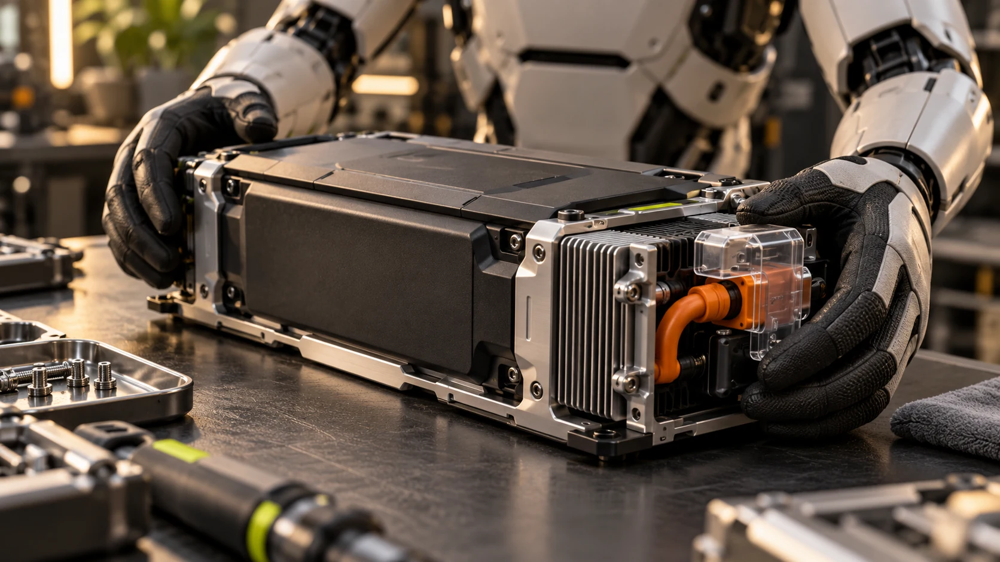

Plan the full operating cycle rather than treating a headline battery figure as uninterrupted productive time.
Battery runtime is one part of a larger operating cycle. A robot may also need charging, setup, inspection, or assistance between tasks. Understanding those transitions makes a project plan more useful than multiplying a quoted runtime by the number of robots you intend to purchase.
Define a typical cycle
Write down the sequence of travel, waiting, manipulation, and return activity for the application. Note whether the workload changes during a shift. Ask the manufacturer which runtime conditions resemble that cycle and which assumptions would need to be checked in a trial.
Include charging in the layout
Identify where charging occurs and how the robot reaches that location. Consider space, access, and the manufacturer’s installation instructions. If a battery exchange is supported, ask who performs it, what equipment is required, and how the procedure fits the actual application.
Track productive and unavailable time separately
A useful operation log distinguishes completed work from waiting, charging, faults, and recovery. That separation shows where an application needs improvement. A short interruption repeated throughout the day may matter more than a longer event that happens infrequently.

Ask about the service path
Confirm how batteries and related parts are supported, replaced, and shipped in your region. Use only the manufacturer’s approved procedures and compatible equipment. Keep responsibility for inspection and service explicit so that routine upkeep is part of the operating plan from the beginning.
Build a shift timeline
Start with a sketch of a working day rather than a battery specification. Mark planned task periods, breaks, setup, inspection, charging, and any supported battery exchange. Then place the robot's expected operating cycle on that timeline using assumptions supplied for the proposed configuration. The sketch may reveal that a charging window aligns naturally with a work break, or that the application needs service at precisely the time the team expects continuous output.
Keep uncertain durations visible. A planning worksheet can have separate columns for a supplier estimate, a trial observation, and the value used in the schedule. Do not quietly substitute the most optimistic number. If a project depends on an unmeasured transition, such as returning to a charger from a distant workstation, make that transition a named item in the trial.
Give every interruption a useful label
A single uptime percentage can conceal very different operating problems. Separate planned charging from waiting for work, waiting for an operator, application faults, and maintenance. Include the beginning and end of each event so that overlapping interruptions do not get counted twice. Agree on whether the denominator is scheduled working time, powered time, or another clearly defined period. Consistent definitions matter more than making the report look precise.
For example, a robot may be charged and ready while no suitable containers are available. That is an application scheduling issue, not evidence of a battery limitation. Another robot may spend a short period charging but then wait much longer for someone to restart the task. Those cases suggest different improvements. An interruption log should help the team decide what to change, rather than merely produce a headline figure.
Make service readiness part of the plan
Create a small responsibility sheet for routine inspection, approved charging equipment, service contacts, and the process for taking a unit out of use. Keep the relevant manufacturer instructions accessible to the people who perform those activities. If the supplier supports multiple power arrangements, record the exact one included in the project. A schedule based on an optional configuration is unreliable when that option has not actually been purchased or installed.
At the end of a trial, compare the planned shift timeline with the observed one. Identify the largest unexplained gaps and assign follow-up questions. A modest difference in one transition may be easy to address; several repeated delays can change the entire staffing plan. The useful outcome is a schedule supported by observations, together with a clear list of conditions under which that schedule is expected to hold.
Your next step.
- Describe the workload behind runtime assumptions.
- Include charging and service locations in the floor plan.
- Log interruptions by cause rather than as one total.
Sources & further reading
Primary sources and manufacturer documentation for the examples and further investigation. Recommendations in this article are HUMANOID’s editorial guidance.
Boston Dynamics: Atlas power and operating information ↗ROBOTIS: OP3 setup documentation ↗Originally prepared and references reviewed: 24 October 2026. Expanded with practical guidance and original illustrations: 25 October 2026. Editorial archive date: 8 Jun 2026. This is original editorial content, not a record of a historical product launch, independent test, or purchase.